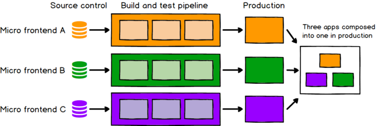

### 微前端 Ming
1. 介绍 2. 提问环节 3. 具体技术
## 介绍 1. 简介 2. 优劣分析 3. 演示
1. 简介
qiankun:
微前端是一种多个团队通过独立发布功能的方式来共同构建现代化 web 应用的技术手段及方法策略。
single-spa:
微前端是指存在于浏览器中的微服务。
一种由独立交付的多个前端应用组成整体的架构风格。具体的，将前端应用分解成一些更小、更简单的能够独立开发、测试、部署的小块，而在用户看来仍然是内聚的单个产品

微前端小视频
2. 优劣分析
### 优 * 代码库更小，更内聚、可维护性更高 * 松耦合、自治的团队可扩展性更好 * 渐进地升级、更新甚至重写部分前端功能成为了可能
### 劣 * 导致依赖项冗余，增加用户的流量负担 * 团队自治程度的增加，可能会破坏协作
3.演示
基础演示
实战演示
## 需要的帮助 * 产品:做好系统的拆分 * 运维:了解项目架构与发布流程 * 设计:各系统风格统一
非技术性的提问环节
## 具体的技术 (非战斗人员可撤离) 1. 方案的选择 2. 具体代码 3. 提问讨论环节
1. 方案的选择
方案
优点
缺点
qiankun
子应用开发完全发布独立
预加载，按需加载
html entry
css隔离，js沙箱
父子应用通讯
一定的改造成本
history 模式路由需要设置 baseUrl
iFrame
完全隔离了css和js
开发成本小
页面加载问题
页面通讯依赖postMessage
弹窗及遮罩层问题
浏览器前进后退问题
Web Components
原生不需要框架
易于继承，不需要编译
真正的局部CSS作用域
重写现有的前端应用
上下游生态系统不完善
系统架构复杂
兼容性問題
2.具体代码